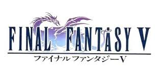

If you click below on each of the game's logo then you will find the plot summary for each entry that is part of the Pixel Remaster. A word of caution, though! The summaries do contain spoilers, so if you want to be surprised I would suggest to go ahead and start playing!
Final Fantasy I
The story begins when four youths known as the Warriors of Light arrive at the kingdom of Cornelia, each carrying a darkened elemental crystal. They are tasked by the King to rescue Princess Sarah from the fallen knight Garland, who has kidnapped her and taken refuge in the Chaos Shrine. After defeating Garland, the warriors embark on a grand journey to restore the light to their crystals by defeating the four Elemental Fiends. Their quest takes them across vast continents and even through time to confront the source of all evil. It is eventually revealed that Garland has created a temporal loop to become the eternal being known as Chaos. By breaking this cycle, the heroes ensure a peaceful future for the world. The game established the foundational tropes of the series, including the class system and the importance of elemental balance.
Final Fantasy III
The world is plunged into darkness when a massive earthquake traps the four elemental crystals and threatens the balance of nature. Four orphans are chosen by the Wind Crystal to become the new Warriors of Light and are granted the power to change their professions through the Job System. As they explore the Floating Continent and the world below, they discover that a powerful sorcerer named Xande is trying to stop time itself. The heroes must navigate treacherous dungeons and seek the help of legendary sages to unlock the ultimate power of the crystals. They eventually learn that Xande is merely a pawn for the Cloud of Darkness, an entity seeking to return the universe to nothingness. By recruiting the help of the Warriors of Dark, the heroes manage to banish the void and restore light to the world. This title is celebrated for introducing the ability to swap character classes dynamically.
Final Fantasy V

The story follows a traveler named Bartz who investigates a fallen meteorite and meets a group of strangers with a shared destiny. They soon discover that the elemental crystals, which govern the world's natural forces, are shattering one by one. This destruction is part of a plot to release Exdeath, an ancient warlock who was sealed within a forest centuries ago. The heroes travel between two parallel worlds to prevent the return of the "Void," a power capable of erasing existence. Throughout their journey, they inherit the abilities of the crystals, allowing for a highly refined and deep Job System. The narrative balances lighthearted adventure with moments of profound grief, particularly regarding the legacy of the Dawn Warriors. Ultimately, Bartz and his companions must enter the Interdimensional Rift to face Exdeath in his final, monstrous form.